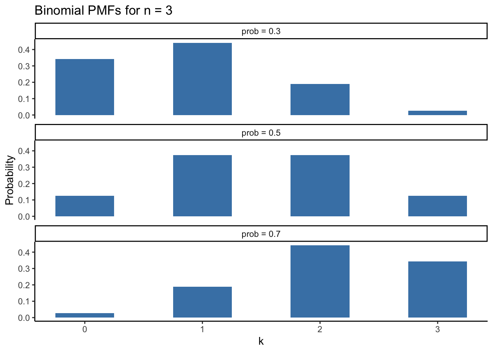
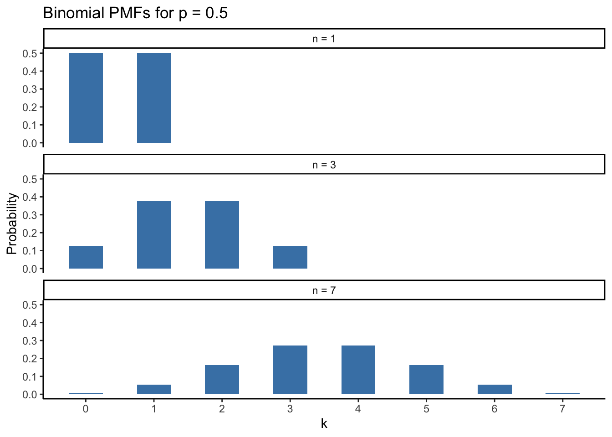

dbinom(x = 2, size = 3, prob = 0.3)[1] 0.189Armed now with our understanding of probability as an extension of logic, in this chapter we will learn to use the three basic logical operators on probability statements: NOT, AND, and OR. These three simple tools form the building blocks of every probability problem we will encounter.1
If we were absolutely certain about a proposition being true, we would say that its probability equals one: \text{P}(A) = 1. Conversely, if we were absolutely certain that A was false, its probability would equal zero: \text{P}(A) = 0. The logical concept of negation allows us to switch between these two statements easily. That’s because something that is “NOT true” is false, and something that is “NOT false” is true. The following formula provides a general method for us to work with the negation of probabilities
\text{P}(A) + \neg\text{P}(A) = 1
In words: the sum of the probability of one proposition and its negation must equal one. We are 100% certain that something happens, or that it doesn’t happen! The symbol \neg means “not” and denotes that we are negating some probability statement. Switching the terms around gives us a handy way to solve for this value
\neg\text{P}(A) = 1 - \text{P}(A)
So far we have only been looking at probability statements individually. “What is the probability of flipping a coin and getting heads?” or “What is the probability that the social democrat candidate wins?” But in real data analysis it is rare to analyze probabilities in isolation. The logical operators AND and OR provide the tools for combining probability statements into a single probability. “What is the probability of flipping a coin and getting heads AND rolling a dice and getting a six?” “What is the probability that the social democrat candidate wins OR the green party candidate wins?” One way of thinking about complex statistical models is that all they are doing is combining a bunch of probability statements together in order to generate predictions.
When calculating the joint probability of two things occurring—that is, the probability of A AND the probability of B—we use the following notation:
\text{P}(A, B)
If A and B are independent, meaning that the probability of one does not depend on the other, this calculation is very simple. The following formula is known as the product rule of probability:
\text{P}(A, B) = \text{P}(A) * \text{P}(B)
This formula can get generalized to include any number of individual probabilities. By considering \text{P}(A, B) to be a single probability we get
\text{P}(\text{P}(A, B), C) = \text{P}(A, B) * \text{P}(C) = \text{P}(A) * \text{P}(B) * \text{P}(C)
Easy!
Unfortunately, the probabilities we would like to combine with AND are rarely independent of one another. We will cover what to do in those situations in the next chapter.
Calculating the probability of one event OR another event is slightly more complicated than combining those two events with AND. This is because the OR calculation is different depending on whether the two events are mutually exclusive or not. If two events are mutually exclusive, their joint probability is zero:
\text{P}(A, B) = 0
Intuitively, if event A happens that makes event B is impossible, or vice-versa. Flipping a heads and flipping a tails are two mutually exclusive events because each one precludes the possibility of the other (in a single flip). Combining probabilities of mutually exclusive events with OR is actually pretty easy—we simply add up each individual probability.
\text{P}(heads) \ OR \ \text{P}(tails) = \frac{1}{2} + \frac{1}{2} = 1
It is certain that when we flip a coin we will get a heads OR a tails.
Things get trickier when trying to use OR on probabilities that are not mutually exclusive. Say we wanted to know the probability of flipping heads OR rolling a number less than six on a six-sided die. If we try adding these probabilities we get:
\text{P}(heads) \ OR \ \text{P}(<6) = \frac{1}{2} + \frac{5}{6} = \frac{4}{3}
Uh oh! Our final probability of 4/3 is greater than 1, which is impossible! The problem is that we are double counting outcomes where both events occur. In order to fix this, we need to subtract the joint probability of both events occurring from the sum of both events individually. This gives us the sum rule of probability:
\text{P}(A) \ OR \ \text{P}(B) = \text{P}(A) + \text{P}(B) - \text{P}(A, B)
Recall how we defined whether two events are mutually exclusive earlier: \text{P}(A, B) = 0. So if the two probabilities we want to combine with OR are mutually exclusive, that term drops out of the sum rule equation and we are able to add the individual probabilities together as before: \text{P}(A) + \text{P}(B)
We encountered probability distributions back in chapter 4 in the context of generating fake data. Now we will look deeper into the math behind how probability distributions work. So far in this chapter we have only been able to use probability theory to solve very specific problems one at a time. “What is the probability of flipping a heads and rolling a six?” Sure, we now have the tools to answer this question, but we will have to recalculate everything from scratch if we changed “rolling a six” to “rolling a five or six”. Probability distributions are functions which we can use as templates to solve an entire class of problems at once!
Each type of probability distribution describes a specific data generating process. In other words, given some causal sequence of events, what data should we expect to see? The binomial distribution comes about when we want to model the probability of getting a number of successful outcomes, given a number of trials and a probability of a successful outcome. The “bi” refers to having two types of outcomes: successes and not-successes. In social science research, the binomial distribution is used all the time to model binary outcomes via logistic regression. Examples include:
The binomial distribution has three parameters which govern its shape
Let’s use a concrete example of voting behavior to make things clearer. Say we wanted to know the probability that an individual named Max turned out to vote in two of the past three elections, given that Max’s turnout rate is 30%. To solve this question we would plug in the following values for the parameters in a binomial distribution:
Let’s try to get a handle on this problem by counting the number of outcomes we care about. In a series of three elections, the possible ways Max can vote in exactly two of them are:
\text{V} = \text{Max turned out to vote}
\text{N} = \text{Max did not turn out to vote}
\text{VVN, VNV, NVV}
Each of these sequences is equally likely because we assumed that each turn out decision Max makes is independent of the last. Notice how each of these sequences is also mutually exclusive.
\text{P(VVN, VNV, NVV)} = 0
One, and only one, of these sequences of votes will actually occur. Because each of these sequences is mutually exclusive, therefore, we can use the sum rule to add their probabilities together!
\text{P(VVN)} + \text{P(VNV)} + \text{P(NVV)}
Or in more compact form:
3 * \text{P(Sequence where Max voted twice)}
Now let’s work on calculating \text{P(Sequence where Max voted twice)} and we will be all done. Because we know that each of the three sequences is equally likely, we will work with one of the sequences, \text{P(VVN)}, and generalize from there. We know \text{P(V)} = 0.3 because we assumed Max has an overall turnout rate of 30%. And from the negation rule, we know that \text{P(N)} = 0.7 because \text{P(V)} + \text{P(N)} = 1. It is certain that Max either turns out to vote or he does not. Now we have everything we need to solve for \text{P(VVN)} using the product rule:
\text{P(VVN)} = \text{P(V)} * \text{P(V)} * \text{P(N)} = 0.3 * 0.3 * 0.7 = 0.063
We can now take that answer and multiply it by 3, the amount of outcomes where Max voted twice:
3 * 0.063 = 0.189
To conclude, Max’s probability of turning out to vote in exactly two out of three elections, given that he turns out to vote 30% of the time, is 0.189. We can confirm this by using R’s dbinom() function:
dbinom(x = 2, size = 3, prob = 0.3)[1] 0.189Max’s voting behavior gave us a nice look at the binomial distribution in action. However, our solution relied on counting the relatively few sequences in which Max could have voted twice in three elections. If we wanted to know the probability of Max voting five times in ten elections, writing all the possible outcomes out would take forever! The solution involves using the binomial coefficient:
{n \choose k}
We read this expression as “n choose k”. It tells us the number of ways we can select the k outcomes we care about from the total number of trials n using the following formula:
{n \choose k} = \frac{n!}{k!(n-k)!}
R has a function for computing this value without typing out the whole formula.
choose(n = 10, k = 5)[1] 252We also want to find an expression for multiplying many independent probabilities together, as we did when we calculated \text{P(VVN)}. Rather than manually counting how many values for \text{P(V)} and \text{P(N)} we need to multiply together, let’s use exponents:
\text{P(VVN)} = \text{P(V)}^2 * \text{P(N)}^1
Which becomes the following in terms of k and n:
\text{P(V)}^k * \text{P(N)}^{n-k}
And we also want everything in terms of \text{P(V)}, which is easy to do using our rule of negation:
\text{P(V)}^k * \text{P(N)}^{n-k} = \text{P(V)}^k * (1 -\text{P(V)})^{n-k}
Lastly we wrap everything up by multiplying by our binomial coefficient and substituting the parameter p for \text{P(V)}:
{n \choose k} * p^k * (1 - p)^{n-k}
And this is the general equation for the binomial distribution! We call this a probability mass function (PMF) because it tells us how much of the total probability for a binomial distribution with fixed n and p is under the value k. Rather than writing this equation out each time we will usually use the following shorthand:
\text{Binomial}(k; n, p) = {n \choose k} p^k (1 - p)^{n-k}
Sometimes it can be nice to visualize a probability distribution to get a better sense of what it looks like when we change the parameters. Let’s take a look at the following binomial distribution with fixed n = 3.
library(tidyverse)
df <- tibble(group = c("prob = 0.3",
"prob = 0.5",
"prob = 0.7"),
prob = c(0.3, 0.5, 0.7)) |>
crossing(k = 0:3) |>
mutate(y = dbinom(x = k, size = 3, prob = prob))
ggplot(df) +
aes(x = k, y = y) +
geom_bar(stat = "identity", fill = "steelblue", width = 0.5) +
facet_wrap(~ group, nrow = 3) +
theme_classic() +
labs(x = "k", y = "Probability",
title = "Binomial PMFs for n = 3")
The height of each bar corresponds to the probability of a given value of k.
df <- tibble(group = c("n = 1",
"n = 3",
"n = 7"),
n = c(1, 3, 7)) |>
crossing(k = 0:7) |>
mutate(y = dbinom(x = k, size = n, prob = 0.5))
ggplot(df) +
aes(x = k, y = y) +
geom_bar(stat = "identity", fill = "steelblue", width = 0.5) +
facet_wrap(~ group, nrow = 3) +
theme_classic() +
labs(x = "k", y = "Probability",
title = "Binomial PMFs for p = 0.5") +
scale_x_continuous(breaks = 0:7)
The graph above shows a binomial distribution with p = 0.5 with different values of n.
Technically we only need NOT and AND, as the OR operation can be derived from the other two.↩︎